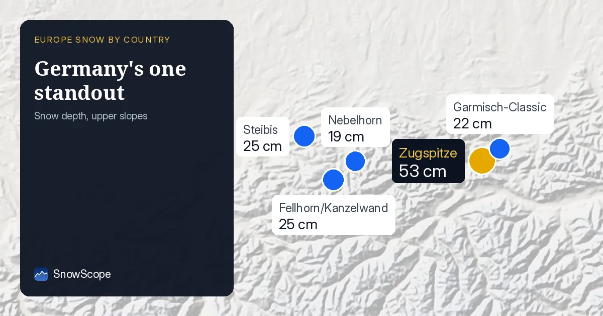
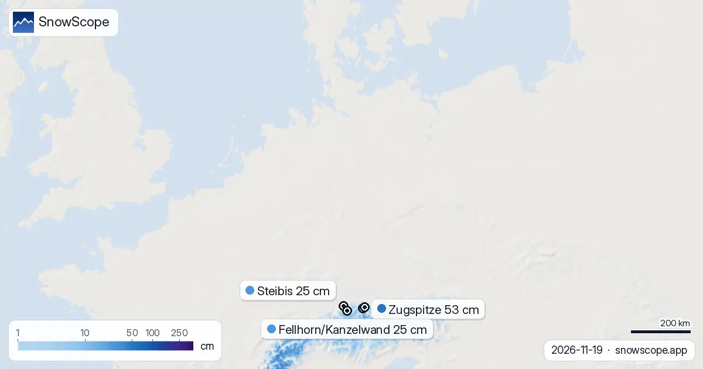

Germany's one standout: Zugspitze with 14 cm
Zugspitze stands alone with 53 cm on its upper slopes as Germany enters a snowy week. By Sunday 22 November, the top mountains could see 14 cm fall in one day, pushing many resorts closer to workable depths.
See the live snow forecast for Zugspitze in the SnowScope appSnow depth, powder alerts and the 3D map, free.
Why Zugspitze rules this week
Height matters. Zugspitze rises to 2,627 m, well above the snow line now sitting at 1,300 m. At 53 cm it has picked up 17 cm since 16 November and faces the incoming storm from the right angle. The other four top resorts—Steibis, Fellhorn/Kanzelwand, Garmisch-Classic and Nebelhorn—each hold 19 to 25 cm, far behind.
Of 231 German resorts tracked, only 51 have snow on their upper slopes today. The rest of the country's high ground lies bare. This narrow window makes the southern Alps the only serious option for a week-long trip.
| Resort | Snow depth | New snow, 72 h | Coming, next days | Top |
|---|---|---|---|---|
| Zugspitze | 53 cm | 17 cm | 29 cm | 2,627 m |
| Steibis | 25 cm | 21 cm | 40 cm | 1,704 m |
| Fellhorn/Kanzelwand | 25 cm | 20 cm | 42 cm | 1,965 m |
| Garmisch-Classic | 22 cm | 12 cm | 22 cm | 2,047 m |
| Nebelhorn | 19 cm | 20 cm | 42 cm | 2,213 m |

What the next three days bring
Up to 23 cm will fall across the region by Sunday. Sunday 22 November stands out with up to 14 cm in a single day. After that, the second week quietens: only 10 cm is likely between 27 November and 3 December.
The Allgäu Alps will catch the most: 23 cm over three days. The Bavarian Alps follow with 17 cm. Even the Black Forest, far from the main snow-makers, will get 5 cm. About 590 km² of ground will receive at least 5 cm.

Snow depth by slope height
The pattern is sharp. Below 1,000 m: bare ground. Between 1,000 and 1,500 m: 1 cm on average, only 38 % covered. Between 1,500 and 2,000 m: 6 cm, fully white. Above 2,000 m: 16 cm, fully white.
This tells you where to go: anywhere above 1,500 m has a continuous base now. Runs between 1,000 and 1,500 m are still patchy and demand care. Below 1,000 m, do not expect snow.
How deep this is compared to past years
Zugspitze holds 53 cm today but normally has 20 cm by 19 November. It is running ahead—70 % of its usual depth for the date at the reference height of 1,811 m. Steibis has only 25 cm but usually has 9 cm, so it too is well above average. Nebelhorn and Garmisch-Classic are closer to their seasonal norms.
This early snow does not mean the winter is set. Early storms melt fast. What matters is whether resorts can keep snow on the ground through December. The third week of November is still vulnerable.
How snow cover has shifted this week
On 16 November, 2,110 km² was white. By 17 November it dropped to 1,470 km²—a heavy melt. It crept back to 1,510 km² on 18 November, then rose to 1,820 km² by 19 November as fresh snow arrived. Only 4 % of Germany's mapped mountains are white, but the upward trend is clear.
A week ago 1,630 km² was covered, so the region has gained 190 km² in seven days. That steady climb tells you the snow is sticking at higher elevations even as lower slopes stay dry.
Timing your visit after the storm
Sunday 22 November is the peak snowfall day. The best skiing comes after the new snow settles and the roads are clear—so plan for Monday 23 November onward. Fresh, unsettled powder is fast and thin over rocks; groomed runs are safer.
Austria's Stubaier Gletscher holds 60 cm and Switzerland's Glacier 3000 has 58 cm, so if you can travel across the border, those glaciers offer more margin. But for a local German trip, Zugspitze in the Bavarian Alps is your anchor.
Tips for skiers
- Ski above 1,500 m where snow cover is complete; avoid the patchy band between 1,000 and 1,500 m where rocks hide under thin cover.
- Wait until Monday 23 November to travel if possible; fresh snow on Sunday will not be settled and roads may still need clearing.
- Check the official avalanche bulletin before any off-piste runs, especially on steep north-facing slopes where new snow loads fastest.
- Early-season snow is dense and thin; groomed runs are safer than forest trails where the base is unreliable.
- The snow line is now at 1,300 m; below that altitude, grass still shows. Plan runs that spend most of their length above this line.
About these numbers
Resort snow depths are the deepest snow on the resort's upper slopes on the date shown; they are estimates for an area, not a measurement at one point. Forecasts can change. Always read the official avalanche bulletin before going off-piste.
Cite this report
For research, teaching or the press: the numbers and charts are free to reuse under CC BY 4.0 with this citation.
SnowScope (2026), Germany's one standout: Zugspitze with 14 cm, https://snowscope.app/blog/en/2026/11/germany-standout-resort-19-november-2026.html, accessed 2026-11-19
SnowScope (Atlas Labs). (2026, November 19). Germany's one standout: Zugspitze with 14 cm. SnowScope snow reports. https://snowscope.app/blog/en/2026/11/germany-standout-resort-19-november-2026.html
BibTeX
@misc{snowscope2026germanystandoutresort19n,
author = {{SnowScope (Atlas Labs)}},
title = {Germany's one standout: Zugspitze with 14 cm},
year = {2026},
month = nov,
howpublished = {\url{https://snowscope.app/blog/en/2026/11/germany-standout-resort-19-november-2026.html}},
note = {Published 2026-11-19 11:53 UTC; accessed 2026-11-19}
}· CC BY 4.0 · Methods, data and tools →
Zugspitze: snow and temperature by height, this winter vs last (tools) →
Follow Zugspitze
Free: a message when fresh snow is coming, and the forecast every morning.
More snow reports

Snow in Bavaria and the Black Forest on 17 November: snow depth on the upper slopes, fresh snow, the next three days and the pick for a short trip.

On 15 December at Fellhorn/Kanzelwand: 63 cm at 1965 m top, 30 cm at mid-mountain, only 10 cm at 918 m base. Plan accordingly.

Zugspitze glacier has 122 cm typical snow on 15 December at 2627 m; Garmisch-Classic top has 57 cm. Same price, different snow cover. Data from 46 winters.